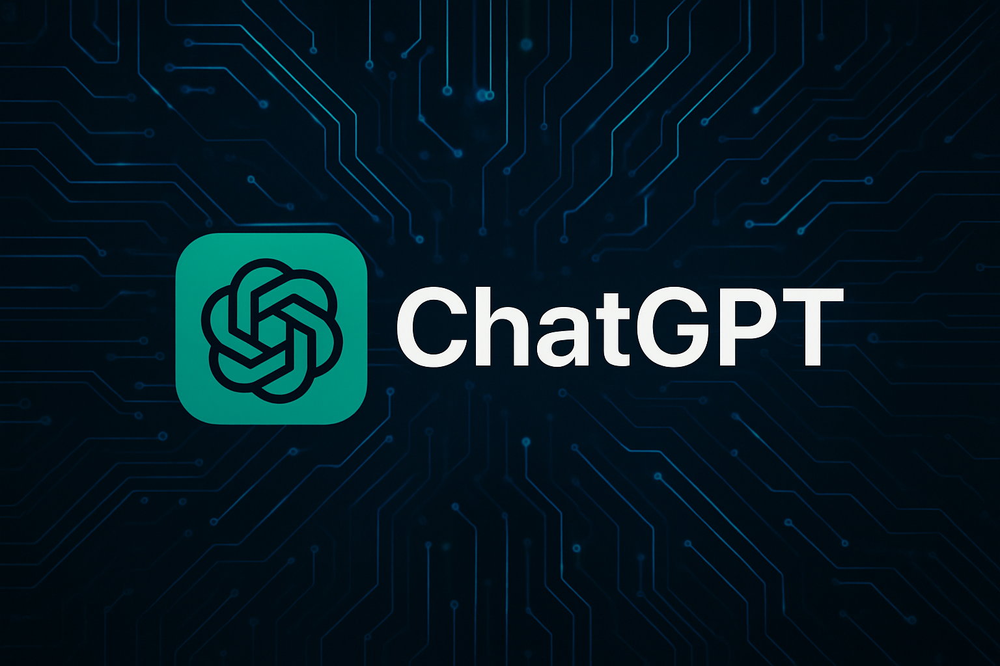
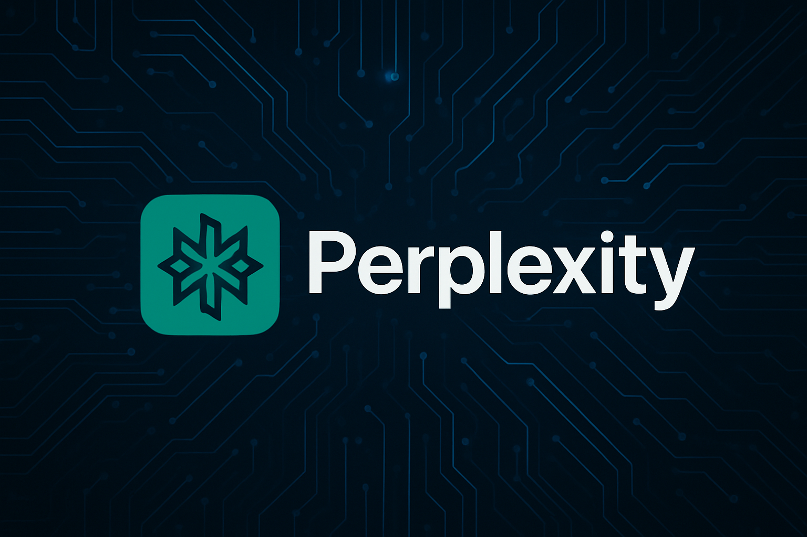

IA ChatGPT
O ChatGPT é um chatbot de inteligência artificial desenvolvido pela OpenAI, lançado em novembro de 2022. Ele utiliza modelos de linguagem avançados (LLMs), como o GPT-4 e GPT-5, para gerar respostas em linguagem natural com base em grandes volumes de dados. Seu funcionamento se baseia na arquitetura Transformer, que permite entender o contexto e gerar textos coerentes e personalizados

Perplexity IA
O Perplexity AI é uma ferramenta de IA generativa lançada em 2022 por engenheiros nos EUA. Diferente do ChatGPT, seu foco principal é responder perguntas com base em pesquisas na web em tempo real, sempre citando as fontes utilizadas. Ele atua como um híbrido entre mecanismo de busca e assistente de pesquisa, oferecendo respostas rápidas, precisas e fundamentadas